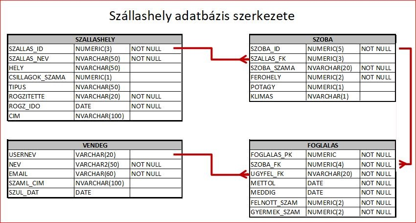
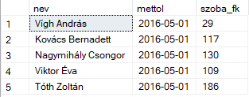
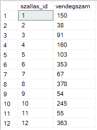
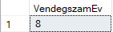
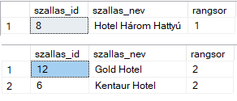
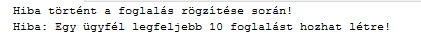

T-SQL Views, Procedures, Functions and Triggers
SQL Server examples focused on reusable database objects, encapsulated logic, validation rules, and trigger-based business control.
Overview
This project uses a sample database containing information about accommodation providers in Hungary, including hotels and other lodging facilities in different regions of the country. The dataset includes tables such as accommodations, rooms, guests, and bookings, which makes it suitable for demonstrating relational queries, analytical SQL functions, and reporting logic. The examples show how SQL Server can store reusable logic inside the database layer through views, stored procedures, scalar functions, table-valued functions, and triggers.
The selected tasks also demonstrate transaction handling and validation logic. This is important because database development is not only about retrieving data, but also about controlling data integrity and enforcing business rules directly at database level.
What This Project Demonstrates
Reusable Query Objects
Views and functions help avoid repeated query logic by storing reusable data access patterns inside the database.
Parameterized Logic
Stored procedures and functions allow business questions to be answered dynamically with input parameters.
Data Validation
Triggers make it possible to intercept inserts or updates and block invalid operations before they are committed.
Transaction Safety
TRY/CATCH, COMMIT, and ROLLBACK ensure that invalid operations do not leave the database in an inconsistent state.
Database Overview

Core SQL Server Concepts Used
View → Procedure / Function → Reusable Business Logic → Trigger Validation → Transaction Control → Error Handling
View
A virtual table that stores a query definition and can be reused like a regular table in later statements.
Stored Procedure
A named and executable SQL program block that can accept parameters and return result sets.
Function
A reusable database object that returns either a scalar value or a table result.
Trigger
An automatic action executed when an INSERT, UPDATE, or DELETE event occurs on a table.
Selected Example Queries and Objects
The following examples were chosen because they show several different levels of T-SQL development: a reusable view, parameterized logic with procedures and functions, table-valued output, and a trigger that actively protects business rules.
Example 1 — View for Daily Booking Snapshot
This view creates a reusable query that returns bookings for a selected date together with guest names. It is a good example of how a repeated reporting query can be encapsulated into a database object.
This kind of object is useful when the same business view needs to be reused by reports or applications.
CREATE VIEW AktivFoglalasok AS SELECT vendeg.nev, foglalas.mettol, foglalas.szoba_fk FROM foglalas JOIN vendeg ON foglalas.ugyfel_fk = vendeg.usernev WHERE foglalas.mettol = '2016-05-01'; SELECT * FROM AktivFoglalasok;

Example 1 Query Results
Example 2 — Stored Procedure for Guest Count by Date Range
This stored procedure accepts a date range as parameters and returns how many guests belong to that date range. It is a clean and practical example of parameterized query logic.
Stored procedures are especially useful when the same query logic must be executed many times with different parameter values.
CREATE PROCEDURE SP_Kihasznaltsag
@tol DATETIME,
@ig DATETIME
AS
BEGIN
SELECT
sz.szallas_id,
SUM(f.felnott_szam + f.gyermek_szam) AS vendegszam
FROM szoba s
JOIN Szallashely sz ON sz.SZALLAS_ID = s.SZALLAS_FK
JOIN Foglalas f ON s.SZOBA_ID = f.SZOBA_FK
WHERE f.mettol BETWEEN @tol AND @ig
GROUP BY sz.szallas_id
ORDER BY sz.szallas_id
END;
EXEC SP_Kihasznaltsag '2016-01-01', '2016-12-31';

Example 2 Query Results
Example 3 — Scalar Function for Guest Count by Birth Year
This function solves a similar task, but instead of returning a full result set, it returns a single integer value. It is a strong contrast to the procedure example because it shows when a scalar return value is more appropriate.
This is useful when the result needs to be consumed directly as a value inside other queries or reporting expressions.
CREATE FUNCTION UDF_VendegszamEv(@szulev INT)
RETURNS INT
AS
BEGIN
DECLARE @db INT;
SELECT @db = COUNT(usernev)
FROM Vendeg
WHERE YEAR(SZUL_DAT) = @szulev;
RETURN @db;
END;
SELECT dbo.UDF_VendegszamEv(1990);

Example 3 Query Results
Example 4 — Table-Valued Function for Accommodation Ranking
This example is one of the stronger portfolio pieces because it combines ranking logic with a table-valued function. The user can request a given ranking position and receive the accommodations belonging to that rank.
This is a good example of combining CTE-based ranking logic with reusable table output in a single elegant object.
CREATE FUNCTION UDF_Rangsor(@rangsorszam INT)
RETURNS TABLE
AS
RETURN
(
WITH RangSor AS (
SELECT
szh.szallas_id,
szh.szallas_nev,
COUNT(*) AS foglalasok_szama,
DENSE_RANK() OVER (ORDER BY COUNT(*) DESC) AS rangsor
FROM foglalas f
JOIN szoba sz ON szoba_fk = sz.szoba_id
JOIN szallashely szh ON sz.szallas_fk = szh.szallas_id
GROUP BY szh.szallas_id, szh.szallas_nev
)
SELECT szallas_id, szallas_nev, rangsor
FROM RangSor
WHERE rangsor = @rangsorszam
);
SELECT * FROM dbo.UDF_Rangsor(1);
SELECT * FROM dbo.UDF_Rangsor(2);

Example 4 Query Results
Example 5 — Trigger to Limit Booking Count per Guest
This is the strongest example on the page because it shows true database-side business rule enforcement. The trigger blocks inserts if a guest already has more than ten bookings, and it wraps the logic in a transaction with error handling.
This example demonstrates several important SQL Server concepts together: trigger timing, inserted pseudo-table usage, transaction control, custom error raising, and rollback protection.
CREATE TRIGGER tgKorlatozas
ON foglalas
INSTEAD OF INSERT
AS
BEGIN
BEGIN TRANSACTION
BEGIN TRY
DECLARE @nev NVARCHAR(30);
DECLARE @db INT;
SELECT @nev = ugyfel_fk
FROM inserted;
SELECT DISTINCT @db = COUNT(FOGLALAS_PK)
FROM foglalas
GROUP BY ugyfel_fk
HAVING COUNT(FOGLALAS_PK) > 10;
IF @db > 10
BEGIN
RAISERROR ('Hiba: Egy ügyfél legfeljebb 10 foglalást hozhat létre!', 16, 1);
ROLLBACK TRANSACTION;
RETURN;
END
INSERT INTO Foglalas
SELECT * FROM INSERTED;
COMMIT TRANSACTION;
PRINT 'Foglalás sikeresen rögzítve!';
END TRY
BEGIN CATCH
ROLLBACK TRANSACTION;
PRINT 'Hiba történt a foglalás rögzítése során!';
PRINT ERROR_MESSAGE();
END CATCH
END;
INSERT INTO Foglalas values (1586, 'zoltan4',1,'2019.02.01','2019.03.05', 2,1)

Example 5 Query Results
Why These Examples Are Strong
They Show More Than Querying
The page moves beyond SELECT logic and shows how SQL Server can store business logic inside the database.
They Are Reusable
Views, procedures, and functions are designed for repeated use rather than one-time querying.
They Reflect Real Control Scenarios
The trigger example mirrors realistic database validation requirements that often appear in business systems.
They Demonstrate SQL Server Depth
These examples show that T-SQL work is not limited to analytics, but also includes control flow and integrity enforcement.
Key Takeaways
- T-SQL supports reusable database-side logic. Views, procedures, and functions help organize repeated query patterns.
- Functions and procedures serve different purposes. Scalar return values, result sets, and table outputs each fit different use cases.
- Triggers can actively protect business rules. They are useful when validation must happen automatically at insert or update time.
- Transactions and error handling are essential. COMMIT and ROLLBACK ensure that failed operations do not corrupt the data state.
Navigation
This page is part of the T-SQL portfolio section and focuses on reusable SQL Server objects and trigger-based validation logic.